有一天
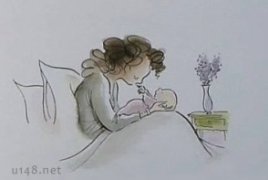
One day I counted your fingers and kissed each one.
曾经，我轻吻着你的每根小指头。
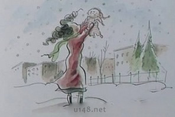
One day the first snowflakes fell,
and I held you up and watched them melt
on your baby skin.
曾经，当第一片雪花飘落，我将你高高举起，
看着它们在你稚嫩的皮肤上融化。
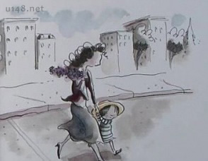
One day,we crossed the street,and you held my hand tight.
曾经，你的小手紧抓着我，一同穿越都市的车水马龙。
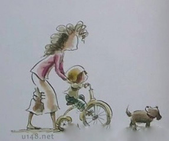
Then ,you were my baby,and now you are my child.
曾经，你是我的小宝宝，现在你是我的大宝贝。
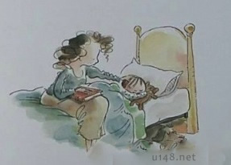
Sometimes,When you sleep,
I watch your dream,and I dream too......
有时，望着沉睡的你，我也跟着梦想……
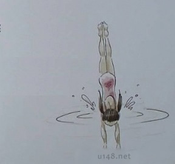
That someday you will dive into the cool,clear water of a lake.
有一天，你会潜入冷冽清澈的湖。
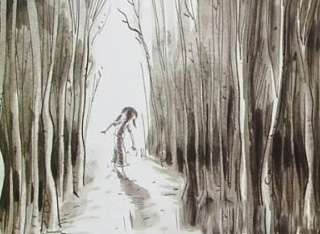
Someday you will walk into a deep wood.
独自走进一座苍郁的森林。
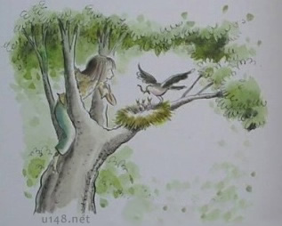
Someday your eyes will be filled
with a joy so deep that they shine.
初见新奇，眼中满是光彩。
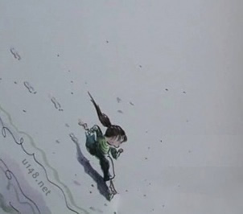
Someday you will run so fast and
so far your heart will feel like fire.
有一天，你会为了心中的渴求，像团火球似的疯狂追逐。
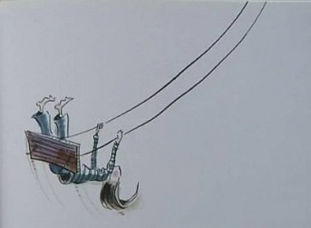
Someday you will swing high so high,
higher than you ever dared to swing.
有一天，你会发现自己荡的比想象的还高。
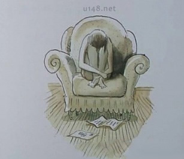
Someday you will hear something so sad
that you will fold up with sorrow.
有一天，你会因为突如其来的坏消息，感觉被深深的哀伤包围。
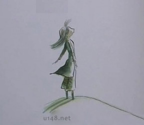
Someday you will call a song to the wind,
and the wind will carry your song away.
有一天，你会站在风中浅唱，期盼风儿把你的心声带向远方。
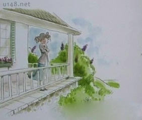
Someday I will stand on this porch and watch
your arms waving to me until I no longer see you.
有一天，我会倚在门边，望着你向我挥手道别，消失在我眼前。
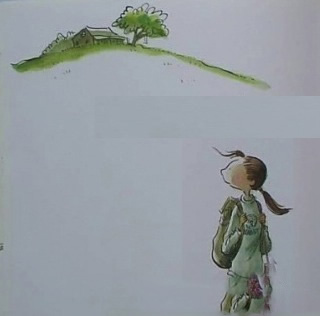
Someday you will look at this house and wonder how something that feels so big can look so small.
有一天，你会望着我们的家，诧异记忆中它的巨大，和此刻看起来的渺小。
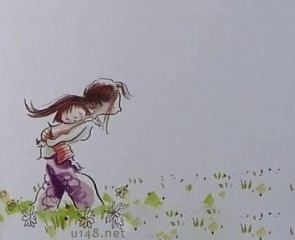
Someday you will feel a small weight against your strong back.
有一天，你会发现，自己坚强的双臂也有着一个小小负担。
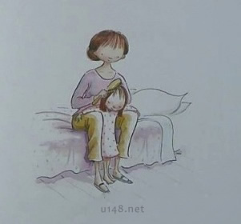
Someday I will watch you brushing your child's hair.
有一天，我会看见你坐在床沿，梳理孩子柔细的发丝。
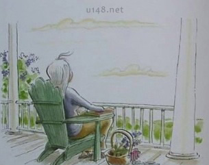
Someday,a long time from now,your own hair will glow silver in the sun.
有一天，很久很久以后的一天，你的头发也会在太阳底下闪着银光。
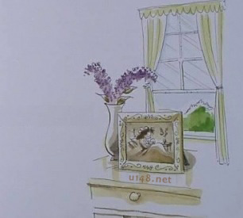
And when that day comes,love,you will remember me.
当那天到来的时候，亲爱的，你会想念我。